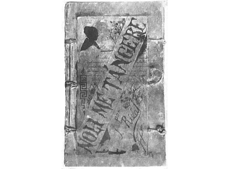
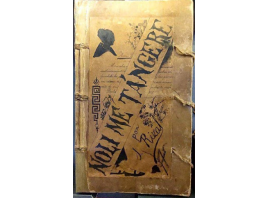

Noli Me Tángere (Touch Me Not) - 1887
Published in Berlin, this scathing social commentary exposed the corruption and abuses of power within the Spanish colonial government and the Catholic Church in the Philippines. The novel's protagonist, Crisostomo Ibarra, embodies Rizal's ideals for reform.

